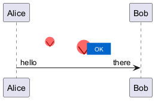

@startuml
!pragma svgparser sax
sprite defsUse <svg viewBox="0 0 120 60" xmlns="http://www.w3.org/2000/svg" xmlns:xlink="http://www.w3.org/1999/xlink">
<defs>
<!-- reusable group: a small icon -->
<g id="icon">
<circle cx="10" cy="10" r="8" fill="#FF6666"/>
<path d="M4 10 L10 18 L16 10" stroke="#800" stroke-width="1" fill="none"/>
</g>
<!-- reusable symbol: a small badge with text -->
<symbol id="badge" viewBox="0 0 40 20">
<rect x="0" y="0" width="40" height="20" rx="4" fill="#0066CC"/>
<text x="20" y="14" font-size="10" text-anchor="middle" fill="#fff">OK</text>
</symbol>
</defs>
<!-- instantiate the defs with <use>; demonstrate positioning, scaling and both href variants -->
<use xlink:href="#icon" x="8" y="8"/>
<use href="#icon" x="40" y="8" transform="scale(1.5)"/>
<use xlink:href="#badge" x="80" y="20" width="40" height="20"/>
</svg>
Alice -> Bob : hello <$defsUse> there
@enduml